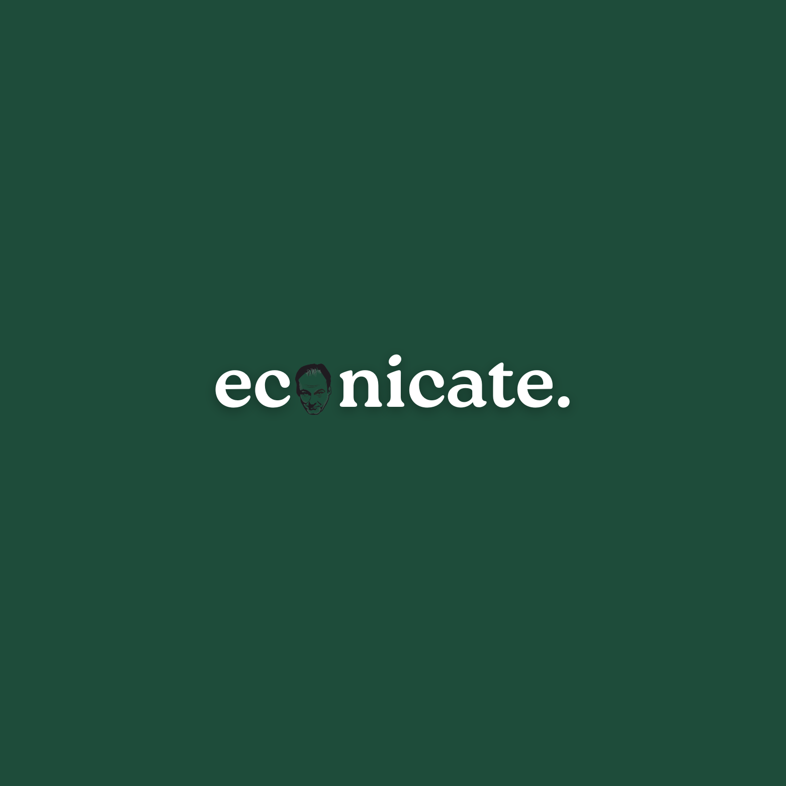

Decoding Markets, Money & Math Weekly
economics, explained with clarity and texture.
econicate publishes visual explainers on markets, money, financial myths, economics in daily life, and the systems behind major events, decisions, and headlines.

econicate
Decoding Markets, Money & Math Weekly
Post Focus
A closer look at what econicate is exploring.
2008 Financial Crisis
Breakdowns of major economic events and how they still shape markets today.
past the headlinesDebt Repackaged
Visual explanations of instruments, mechanisms, and the structure behind complex finance.
inside the instrumentBroken Signals
What markets react to, what they ignore, and where economic signals get misread.
how markets reactIndex Impact
How indexes, benchmarks, and investor flows can influence perception and price action.
inside the mechanismChristmas Economics
Seasonal demand, pricing, consumption, and the economic logic behind everyday moments.
look past the surfaceEconomics In Football
Money, incentives, talent, valuation, and why sport is also a business system.
why do footballers earn millions?Topics
What econicate decodes.
Financial Mythbusting
Untangles popular money beliefs and separates confident claims from economic reality.
Economics In Daily Life
Shows how pricing, incentives, scarcity, and behavior shape ordinary decisions.
Math Behind Markets
Explores the logic, patterns, and quantitative thinking that sit beneath financial movement.
Making The Model
Turns abstract systems into understandable frameworks that can be followed step by step.
Series Style
Recurring ways ideas are presented.
Historical Event Breakdowns
Posts that revisit major crises, turning points, and financial episodes with context and structure.
Mechanism Explainers
Slides focused on how something works beneath the surface, whether it is an index, a product, or a market rule.
Everyday Economics
Content that ties economic logic to holidays, sports, habits, pricing, and the choices people make every day.
econicate